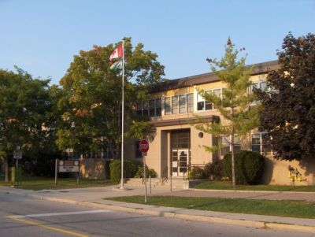

I don't think I've lived long enough to really have a “history”, and while I do
have a few stories, I probably shouldn't be telling them here. Here's some stuff I'm willing to tell:
My parents are both from China, but they moved to Canada when they were maybe my age, and of course
later met and had me and my brothers. When I was a baby I spoke Cantonese, but by the time I went
to kindergarten I was basically only speaking English. Nowadays I can only say some random and basic
sentences in Cantonese, but it's kind of sad because I can't speak Cantonese but my grandparents can't
speak English, so it's really hard for me to talk to them. Plus, the Cantonese I learned isn't necessarily
proper. It's my parents' village dialect, so if I were to try to say what I know to other people
they probably wouldn't understand or would misunderstand. I really wish I could speak though, and I
would try to learn Mandarin and Cantonese but the languages themselves are said to be hard to learn, so
it just becomes a bit of a daunting task.
My first school: J.G. Workman P.S.Victoria Park is my 4th school I believe, with my last 3 being J.G. Workman Public School,
Selwyn Elementary School, and G.A. Brown Middle School.
My home school is actually a school called Danforth Gardens Public School, but when my eldest brother first started school
our home school was J.G. Workman. When we moved, my parents didn't want to make him switch schools so I went there with both of my older brothers.
The school is pretty small, and it was still close to where we lived despite not being our home school anymore.
I think the saddest part about going there was that it was about a 2 minute drive away and started at 8:40 a.m. yet
I was somehow late almost every day. I went there from kindergarten to grade 3, and I switched schools to Selwyn by grade 4.
So in grade 3 I took the gifted test, and went to Selwyn starting grade 4 to do the gifted program which I'd continue to be in all
the way through to grade 8. If I'm being honest, I didn't really want to stay in the gifted program until I was in maybe grade 6, but

Selwyn, school I went to for gifted
I'm really glad that I did. Not wanting to stay didn't have to do with Selwyn though; I just missed my friends. Selwyn was a decent
school I guess, I don't really remember much. All I really remember is that they had good snacks. Sometimes they gave us french
toast or grilled cheese sandwhiches, or some kind of fruit. I think in terms of academics though, Selwyn was better than J.G. Workman, and
coming into gifted I was really behind. Being in the environment that I was probably pushed me to catch up too. Since it's an elementary school
going up to grade 5, we had a graduation ceremony before going to grade 6 for middle school. We went to a Blue Jays game which was perhaps
a little lack luster, but it was still exciting as a 5th grader to be graduating like that.
Like I said, Selwyn only went up to grade 5. So from grade 6 to 8 I went to a school called Gordon A. Brown,
which was literally right next to Selwyn.
G.A. Brown, a really cool middle school
Not going to lie, out of the three schools G.A. Brown was my favourite to be at. I remember being scared to transition to middle school,
thinking there would be people getting shoved into lockers or something but honestly people there aren't even tall. The teachers there were
really great, and I think my class was fortunate enough to have this particular teacher teach us for both grades 6 and 8.
Grade 7 was a little
rough in terms of work, but I was in a split 7/8 class that year and I feel like meeting all the people made it worth it. Being at G.A. was a
lot of fun, and going there with the class that I was in with the friends that I had is why I don't regret going to gifted. I don't know how it was in other streams, but since
there aren't a huge number of gifteds per year the class make-up was virtually the same every year, save for a few people joining or leaving between grades.
So, since most of us knew each other and had been in the same class since grade 4, it made for a more comfortable and fun class environment. I'm grateful
for how our grade 8 year turned out since we were all familiar with each other, as well as our teacher. I miss it a lot too, so hopefully I'll be able to
visit it again with my friends one day and intimidate the lowerclassmen.
Back to top
 sentences in Cantonese, but it's kind of sad because I can't speak Cantonese but my grandparents can't
speak English, so it's really hard for me to talk to them. Plus, the Cantonese I learned isn't necessarily
proper. It's my parents' village dialect, so if I were to try to say what I know to other people
they probably wouldn't understand or would misunderstand. I really wish I could speak though, and I
would try to learn Mandarin and Cantonese but the languages themselves are said to be hard to learn, so
it just becomes a bit of a daunting task.
sentences in Cantonese, but it's kind of sad because I can't speak Cantonese but my grandparents can't
speak English, so it's really hard for me to talk to them. Plus, the Cantonese I learned isn't necessarily
proper. It's my parents' village dialect, so if I were to try to say what I know to other people
they probably wouldn't understand or would misunderstand. I really wish I could speak though, and I
would try to learn Mandarin and Cantonese but the languages themselves are said to be hard to learn, so
it just becomes a bit of a daunting task.